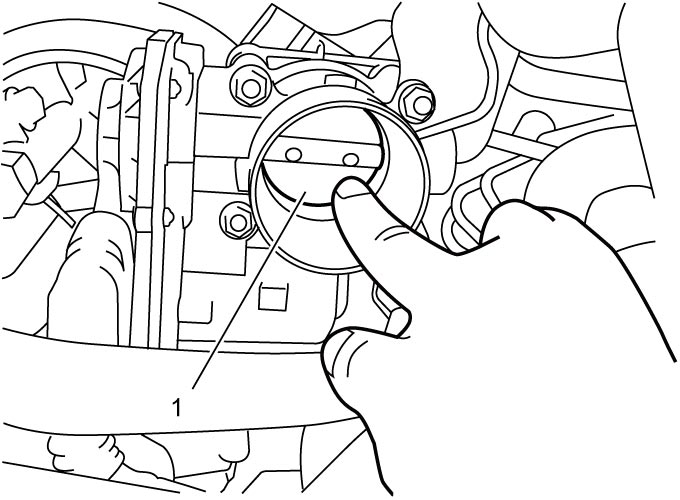
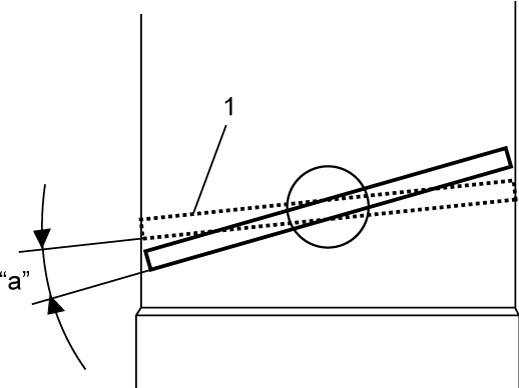
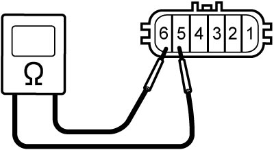
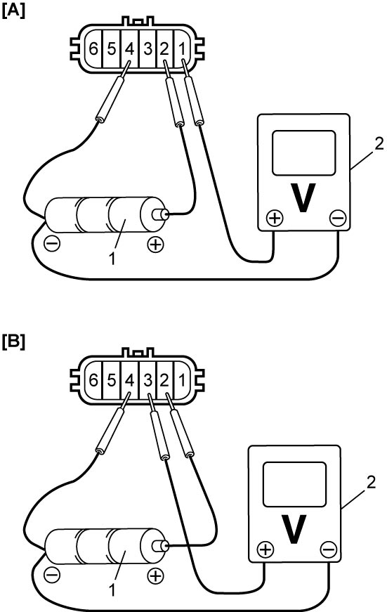
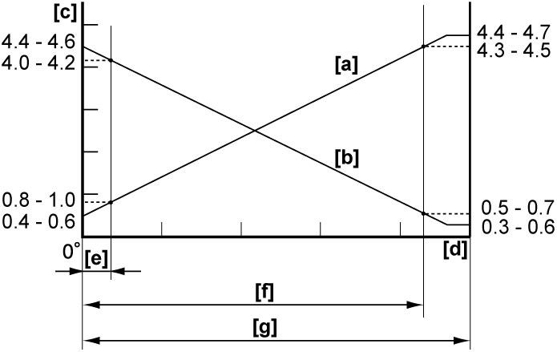

1C
| Electric Throttle Body Assembly On-Vehicle Inspection |
If you touch the throttle valve with your finger when the ignition is “ON” and the accelerator pedal is depressed, finger may be pinched in the gap between the throttle valve and throttle body housing if the accelerator pedal is released.
Never touch the throttle valve with your finger when the ignition is “ON” and the accelerator pedal is depressed.
NOTICE:
Failure to take proper precautions when handling the electric throttle body assembly may lead to malfunction of the electric throttle body assembly or damage to its components.
•Do not disassemble the electric throttle body assembly.
•Do not drop or otherwise expose the electric throttle body assembly to large shock. Any electric throttle body assembly that has received large shock should be replaced.
•Keep the throttle body housing and/or throttle valve free of dust, metallic particles or other foreign materials.
•Do not apply undue forces to the throttle valve when checking operation of the throttle valve or performance of the TP sensor; otherwise the plastic gears in the throttle valve actuator will be damaged.
•Do not drop or otherwise expose the electric throttle body assembly to large shock. Any electric throttle body assembly that has received large shock should be replaced.
•Keep the throttle body housing and/or throttle valve free of dust, metallic particles or other foreign materials.
•Do not apply undue forces to the throttle valve when checking operation of the throttle valve or performance of the TP sensor; otherwise the plastic gears in the throttle valve actuator will be damaged.
NOTE:
After replacing electric throttle body assembly, calibration of throttle valve position is required. 
Throttle Valve Visual Check
1)Set ignition “OFF”.
2)Remove intercooler outlet hose No.2.
3)Check that there is no foreign material caught between throttle valve and throttle body housing. If foreign materials are present, remove throttle body and clean its inside thoroughly.
Throttle Valve Operation Check
1)Set ignition “OFF”.
2)Remove intercooler outlet hose No.2.
3)Check throttle valve operation as follows.
If faulty condition is found, replace electric throttle body assembly.
If faulty condition is found, replace electric throttle body assembly.
a)Check that throttle valve (1) moves smoothly to both fully closed position and fully open position when pressed manually.


 "Expand image")
b)Check throttle valve returns to default position when finger pressure on throttle valve is released at both fully closed position (1) and fully open position.
Throttle valve default position
“a”: 8.6° from fully closed position

 "Expand image")
Electric Throttle Body System Operation Check
1)Remove intercooler outlet hose No.2.
2)Set ignition “ON”.
3)Check electric throttle body system as follows.
If faulty condition is found, go to Step 4).
If faulty condition is found, go to Step 4).
a)Depress accelerator pedal gradually and check that throttle valve moves smoothly until it opens fully.
b)Release accelerator pedal and check that throttle valve moves back to applicable position.
Throttle valve opening angle
“a”: 3 to 15° from completely closed position (1)
4)Check the following points.
If check result is OK, replace electric throttle body assembly.
If check result is OK, replace electric throttle body assembly.
•Wire harness and connections
•APP sensor:
•TP sensor:
•Throttle motor:
•ECM:
•APP sensor:
•TP sensor:
•Throttle motor:
•ECM:
Throttle Motor Check
1)Set ignition “OFF”.
2)Disconnect connector from electric throttle body assembly.
3)Measure resistance between terminal “5” and terminal “6” of electric throttle body assembly.
If faulty condition is found, replace electric throttle body assembly.
If faulty condition is found, replace electric throttle body assembly.
Throttle motor resistance
0.3 to 100 Ω at 20 °C (68 °F)

 "Expand image")
TP Sensor Performance Check
1)Set ignition “OFF”.
2)Remove air cleaner assembly.
3)Disconnect connector from electric throttle body assembly.
4)Check output voltage of TP sensor main and sub signals as follows.
If faulty condition is found, replace electric throttle body assembly.
If faulty condition is found, replace electric throttle body assembly.
a)Arrange 3 new 1.5 V batteries (1) in series, and check that total voltage is 4.5 to 5.0 V.
b)Connect voltmeter (2) and batteries to TP sensor as shown in figure.

 "Expand image")
| [A]: | TP sensor (main) | [B]: | TP sensor (sub) |
c)Check that voltage varies depending on throttle opening angle as shown in the following graph while throttle valve is opened and closed manually.

 "Expand image")
| [a]: | TP sensor (main) voltage |
| [b]: | TP sensor (sub) voltage |
| [c]: | TP sensor output voltage (V) |
| [d]: | Throttle valve opening |
| [e]: | Position where throttle valve is open by 8.6° from fully closed position (default position) |
| [f]: | Angle obtained when accelerator pedal is depressed fully (86°) |
| [g]: | Angle obtained when throttle valve is fully opened manually (98°) |